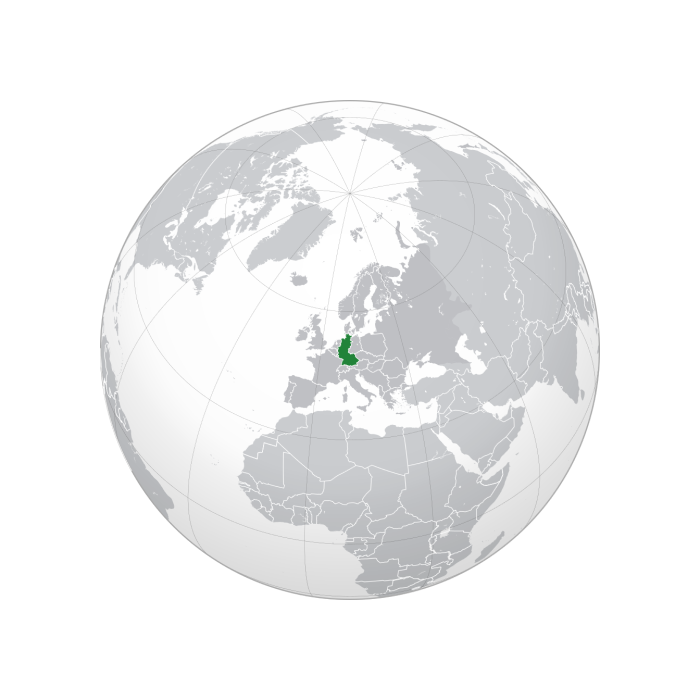

West Germany Flag
West Germany was chosen as the host nation by FIFA in London, England on 6 July 1966. Hosting rights for the 1978 and 1982 tournaments were awarded at the same time. West Germany agreed to a deal with Spain by which Spain would support West Germany for the 1974 tournament, and in return West Germany would allow Spain to bid for the 1982 World Cup unopposed.

West Germany Location
Speaking in 2008, Brazilian former FIFA president João Havelange said to Folha de Sao Paulo that this competition, along with the 1966 FIFA World Cup in England, was fixed so that the host country would win; "In the three matches that the Brazilian national team played in 1966, of the three referees and six linesmen, seven were British and two were Germans. Brazil went out, Pelé 'exited' through injury [following some rough defensive play], and England and Germany entered into the final, just as the Englishman Sir Stanley Rous, who was the President of FIFA at the time, had wanted. In Germany in 1974 the same thing happened. During the Brazil-Netherlands match, the referee was German, we lost 2–0 and Germany won the title. We were the best in the world, and had the same team that had won the World Cup in 1962 in Chile and 1970 in Mexico, but it was planned for the host countries to win".